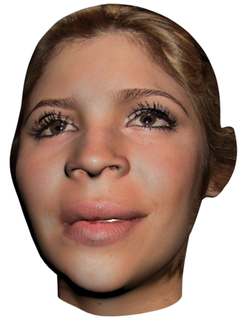
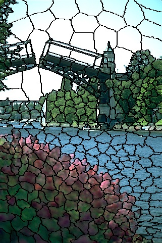
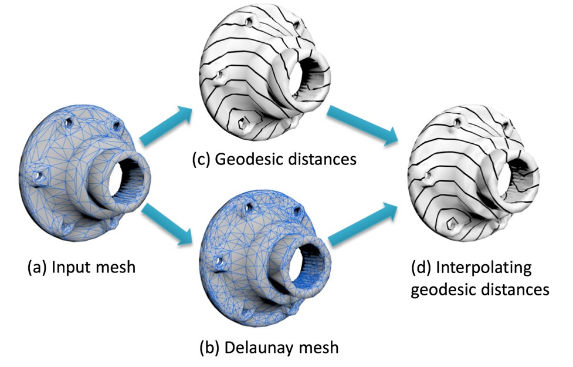
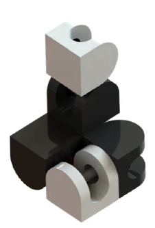
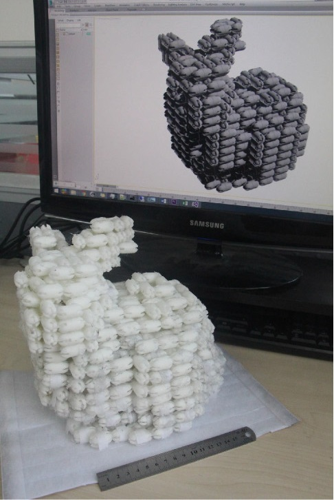
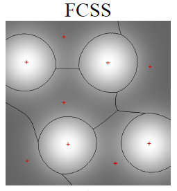
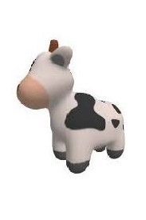
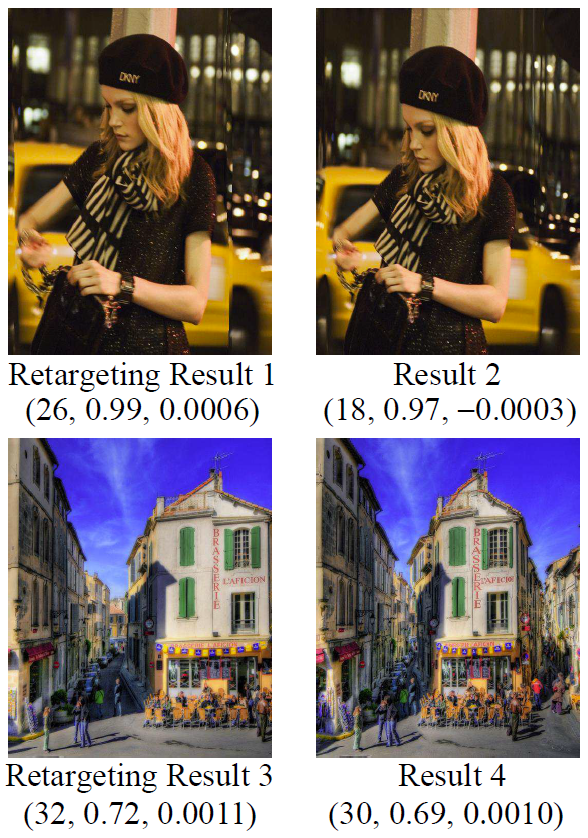
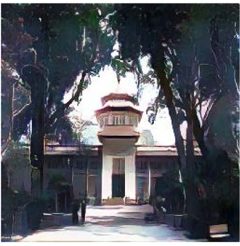

Career Profile
I am a ph.D. student in Department of Computer Science and Technology, Tsinghua University. My professor is Prof. Yong-Jin Liu. My research interests are Computer Graphices and Computational Geometry.
Publications

3D-CariGAN: An End-to-End Solution to 3D Caricature Generation from Normal Face Photos
Accepted by IEEE Transactions on Visualization and Computer Graphics (TVCG)

Fast computation of content-sensitive superpixels and supervoxels using q-distances
Proceedings of the IEEE/CVF International Conference on Computer Vision (ICCV). 2019

Dirichlet energy of Delaunay meshes and intrinsic Delaunay triangulations
Computer-Aided Design (CAD), 2020

DE-Path: A Differential-Evolution-Based Method for Computing Energy-Minimizing Paths on Surfaces
Computer-Aided Design (CAD), 2019


Lineup: Computing chain-based physical transformation
ACM Transactions on Graphics (TOG), 2019

Feature-aware uniform tessellations on video manifold for content-sensitive supervoxels
IEEE transactions on pattern analysis and machine intelligence (TPAMI), 2020

From traditional rendering to differentiable rendering: theories, methods and applications
SCIENTIA SINICA Informationis, 2021

Ranking-Preserving Cross-Source Learning for Image Retargeting Quality Assessment
IEEE transactions on pattern analysis and machine intelligence (TPAMI), 2019

GAN-based Multi-Style Photo Cartoonization
IEEE Transactions on Visualization & Computer Graphics (TVCG), 2021